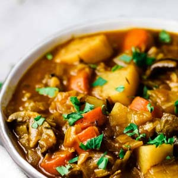
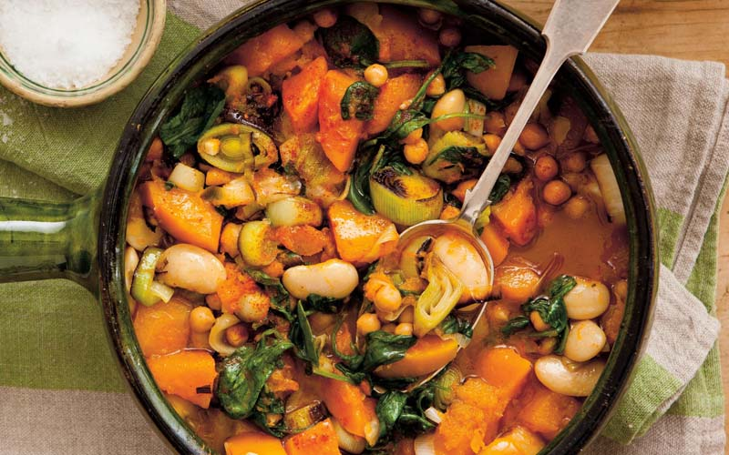

International Dishes Recipe 10:
Vegetable Stew
- Dish Description:
- A combination of solid food ingredients that have been cooked in liquid and served in the resultant gravy. Ingredients in include any combination of vegetables and may include meat, especially tougher meats suitable for slow-cooking, such as beef, poultry, sausages, and seafood. While water can be used as the stew-cooking liquid, stock is also common. A small amount of red wine is sometimes added for flavour. Seasoning and flavourings may also be added. Stews are typically cooked at a relatively low temperature (simmered, not boiled), allowing flavours to mingle.

Ingredients:
- 2 tablespoons olive oil
- 10 oz baby bella mushroom (275 g), quartered
- 1 yellow onion, diced
- 3 carrots, chopped
- 2 celery stalks, chopped
- 2 cloves garlic, minced
- 1/2 teaspoon dried rosemary
- 1/2 teaspoon dried thyme
- 1/2 teaspoon pepper
- 3 tablespoons tomato paste
- 2 tablespoons low sodium soy sauce
- 1/4 cup flour (30 g)
- 3/4 cup dry red wine (180 mL)
- 4 cups red potato (900 g), diced
- 4 cups vegetable broth (960 mL)
- 2 leaves bay leaf
Directions:
- In large pot or Dutch oven, heat the olive oil over medium heat.
- Once the oil begins to shimmer, add the mushrooms and cook for about 5 minutes, or until most of their juices have been released.
- Add the onions, carrots, and celery, and cook for 4-5 minutes, or until onions are semi-translucent.
- Add the garlic, rosemary, thyme, pepper, tomato paste, and soy sauce, and cook for 2-3 more minutes, until the herbs are fragrant.
- Add the flour and stir until fully incorporated. Add the wine and stir until mostly absorbed.
- Add the potatoes, vegetable broth, and bay leaves, and bring to a boil.
- Reduce the heat to medium-low and simmer for 45 minutes, stirring occasionally, until the potatoes are tender and the stew has thickened.
- Remove the bay leaves.